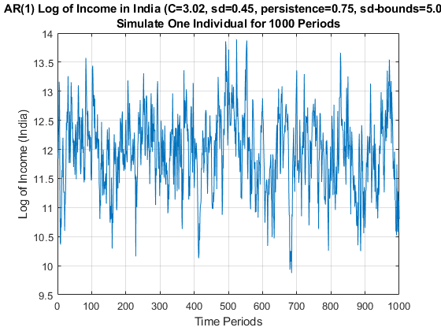
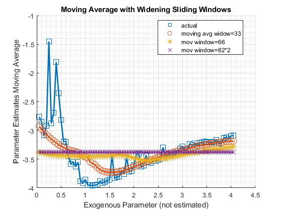
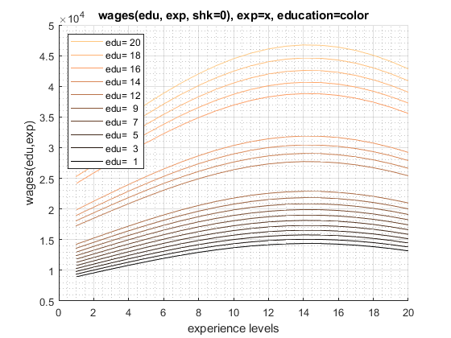
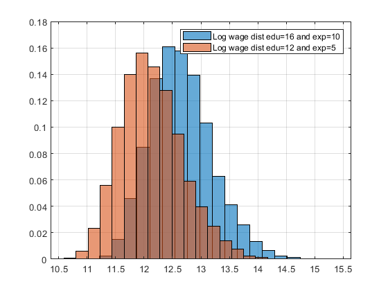

Chapter 3 Distributional Processes
3.1 Time Series
3.1.1 Simulate AR(1) Autoregressive Processes
Go back to fan’s MEconTools Package, Matlab Code Examples Repository (bookdown site), or Math for Econ with Matlab Repository (bookdown site).
3.1.1.1 Mean and Standard Deviation for AR(1) Autoregressive Process
A first-order autoregressive process can be written as:
AR1: \(X_t =\textrm{constant}+\textrm{persistence}\cdot x_{t-1} +\epsilon\)
AR1: \(X_t =C+\rho \cdot x_{t-1} +\epsilon\)
Assume that \(\epsilon\) is mean zero
Note that, we know the mean of \(X\):
\(\displaystyle \mu_X =C+\rho \cdot \mu_X +0\)
\(\displaystyle \mu_x =\frac{C}{1-\rho }\)
Note that, we also know the standard deviation of \(X\):
\(\displaystyle \textrm{var}\left(X\right)=\rho^2 \cdot \textrm{var}\left(X\right)+\textrm{var}\left(\epsilon \right)\)
\(\displaystyle \sigma_x =\sqrt{\frac{\sigma_{\epsilon }^2 }{1-\rho^2 }}\)
We will let the initial point of the time series follow the stationary distribution of the AR(1) process, then we simulate the time series over 100 periods, in the example below, we use a highly persistent shock process with \(\rho =0.98\), \(\sigma_{\epsilon } =0.02\), \(C=0.02\). Note that for this process:
\(\displaystyle \mu_x^{\rho =0.98,\sigma_{\epsilon } =0.02,C=0.02} =\frac{0.02}{1-0.98}=1\)
\(\displaystyle \sigma_x^{\rho =0.98,\sigma_{\epsilon } =0.02,C=0.02} =\sqrt{\frac{0.02^2 }{1-0.98^2 }}\approx 0.10\)
3.1.1.2 Simulated one First-Order Autoregressive Time-Series
In the Example below, we simulate an individual for 1000 periods, given \(\rho =0.98\), \(\sigma_{\epsilon } =0.02\), \(C=0.02\). Given that the process is highly persistent, the individual stays rich or poor for dozens of periods at a time. If each period is a year, look at the results below, and suppose the simulated time series is income, what is the process saying about this person’s income rise and fall. Note that we have the same person through all 1000 periods, but if you only look at 50 periods (years), you might this this person during one span is really successful, anothe segment of 50 years, doing really bad, but actually there is nothing changing in the person’s type, all that is changing is the person’s luck.
First Set Parameters:
% Number of Time Periods
it_T = 1000;
% Mean and SD of the Shock Process
fl_constant = 0.02;
fl_normal_sd = 0.02;
% Persistence
fl_persistence = 0.98;
% Bounds on Shocks
fl_shk_bnds = 3;
% Initialize with exo fed point or not, if false initialize at Random Point
% from the stationary distribution
bl_init = true;
fl_init = fl_constant/(1 - fl_persistence);Second, generate a vector of normal shocks:
% Generate a normal shock vector (the first draw will be ignored)
it_draws = it_T;
rng(789);
ar_fl_shocks = normrnd(0, fl_normal_sd, 1, it_draws);
disp(ar_fl_shocks(1:20));
Columns 1 through 15
-0.0060 -0.0047 0.0168 0.0118 0.0380 0.0062 -0.0616 -0.0485 -0.0192 0.0023 -0.0197 0.0040 0.0156 -0.0089 0.0160
Columns 16 through 20
0.0099 -0.0200 -0.0206 -0.0090 -0.0069Third, replace any values exceeding bounds:
% out of bounds indicators
fl_shk_bds_lower = 0 - fl_normal_sd*fl_shk_bnds;
fl_shk_bds_upper = 0 + fl_normal_sd*fl_shk_bnds;
ar_bl_outofbounds = (ar_fl_shocks <= fl_shk_bds_lower | ar_fl_shocks >= fl_shk_bds_upper);
% count out of bounds
disp(strcat('lower:', num2str(fl_shk_bds_lower), ', upper:', num2str(fl_shk_bds_upper)));
lower:-0.06, upper:0.06
disp(sum(ar_bl_outofbounds));
4
ar_fl_shocks(ar_fl_shocks <= fl_shk_bds_lower) = fl_shk_bds_lower;
ar_fl_shocks(ar_fl_shocks >= fl_shk_bds_upper) = fl_shk_bds_upper;Fourth, generate the AR(1) time series:
% Initialize Output Array
ar_fl_time_series = zeros(size(ar_fl_shocks));
% Loop over time
for it_t=1:1:length(ar_fl_shocks)
if (it_t == 1)
% initialize using the ean of the process
ar_fl_time_series(1) = fl_constant/(1 - fl_persistence);
if (bl_init)
ar_fl_time_series(1) = fl_init;
end
else
fl_ts_t = fl_constant + ar_fl_time_series(it_t-1)*fl_persistence + ar_fl_shocks(it_t);
ar_fl_time_series(it_t) = fl_ts_t;
end
endFifth, show the mean and sd of the process (these are very close to the analytical results):
disp(mean(ar_fl_time_series));
1.0104
disp(std(ar_fl_time_series));
0.1000Sixth, plot the results:
figure();
% x-axis
ar_it_time = 1:1:length(ar_fl_shocks);
% plot
plot(ar_it_time, ar_fl_time_series);
% Generate Title
ar_fl_params_values = [fl_constant, fl_normal_sd, fl_persistence, fl_shk_bnds];
ar_st_parms_names = ["C", "sd", "persistence", "sd-bounds"];
st_rounding = '.2f';
st_title_main = "AR(1) ";
ar_st_params = strcat(ar_st_parms_names, compose(strcat("=%", st_rounding), ar_fl_params_values));
st_param_pasted = strjoin(ar_st_params, ', ');
st_title_wth_params = strcat(st_title_main, ' (', st_param_pasted, ')');
title({st_title_wth_params, 'Simulate One Individual for 1000 Periods'});
% X and Y labels
ylabel({'Time Series Values'});
xlabel('Time Periods');
grid on;
3.1.1.3 Income Process for India
In the Example below, we simulate an individual for 1000 periods. In the example below, the parameters are from estiamting an AR(1) process for log of income in India, see Udupa and Wang (2020). We can use the ff_simu_stats function from MEconTools to look at the distributional information from this time series, we care about income, so we will exponentiate the log of income we obtained.
Note that for the distributional results, GINI, share of income held by different percentiles of households, is invariant to the choice of the \(C\) constant term earlier. Try changing that number, the distributional statistics that we obtain below will be the same. Also note that the exponential of the mean of the log of income is not equal to the mean of income.
% Number of Time Periods
it_T = 1000;
% Mean and SD of the Shock Process
fl_constant = 3.024467;
fl_normal_sd = 0.45;
% Persistence
fl_persistence = 0.7468;
% Bounds on Shocks
fl_shk_bnds = 5;
% Initialize with exo fed point or not, if false initialize at Random Point
% from the stationary distribution
bl_init = true;
fl_init = fl_constant/(1 - fl_persistence);
% Generate a normal shock vector (the first draw will be ignored)
it_draws = it_T;
rng(789);
ar_fl_shocks = normrnd(0, fl_normal_sd, 1, it_draws);
% out of bounds indicators
fl_shk_bds_lower = 0 - fl_normal_sd*fl_shk_bnds;
fl_shk_bds_upper = 0 + fl_normal_sd*fl_shk_bnds;
ar_bl_outofbounds = (ar_fl_shocks <= fl_shk_bds_lower | ar_fl_shocks >= fl_shk_bds_upper);
ar_fl_shocks(ar_fl_shocks <= fl_shk_bds_lower) = fl_shk_bds_lower;
ar_fl_shocks(ar_fl_shocks >= fl_shk_bds_upper) = fl_shk_bds_upper;
% Initialize Output Array
ar_fl_time_series = zeros(size(ar_fl_shocks));
% Loop over time
for it_t=1:1:length(ar_fl_shocks)
if (it_t == 1)
% initialize using the ean of the process
ar_fl_time_series(1) = fl_constant/(1 - fl_persistence);
if (bl_init)
ar_fl_time_series(1) = fl_init;
end
else
fl_ts_t = fl_constant + ar_fl_time_series(it_t-1)*fl_persistence + ar_fl_shocks(it_t);
ar_fl_time_series(it_t) = fl_ts_t;
end
end
ar_series = (ar_fl_time_series);
fl_mean = mean(ar_series);
fl_std = std(ar_series);
figure();
% x-axis
ar_it_time = 1:1:length(ar_fl_shocks);
% plot
plot(ar_it_time, (ar_fl_time_series));
% Generate Title
ar_fl_params_values = [fl_constant, fl_normal_sd, fl_persistence, fl_shk_bnds];
ar_st_parms_names = ["C", "sd", "persistence", "sd-bounds"];
st_rounding = '.2f';
st_title_main = "AR(1) Log of Income in India";
ar_st_params = strcat(ar_st_parms_names, compose(strcat("=%", st_rounding), ar_fl_params_values));
st_param_pasted = strjoin(ar_st_params, ', ');
st_title_wth_params = strcat(st_title_main, ' (', st_param_pasted, ')');
title({st_title_wth_params, 'Simulate One Individual for 1000 Periods'});
% X and Y labels
ylabel({'Log of Income (India)'});
xlabel('Time Periods');
grid on;
% Set Parameters
mp_cl_mt_xyz_of_s = containers.Map('KeyType','char', 'ValueType','any');
mp_cl_mt_xyz_of_s('log_income') = {(ar_series), zeros(1)};
mp_cl_mt_xyz_of_s('income') = {exp(ar_series), zeros(1)};
mp_cl_mt_xyz_of_s('ar_st_y_name') = ["log_income", "income"];
% Mass
rng(123);
mt_f_of_s = zeros(size(ar_series)) + 1/numel(ar_series);
mt_f_of_s = mt_f_of_s/sum(mt_f_of_s, 'all');
mp_cl_mt_xyz_of_s_out = ff_simu_stats(mt_f_of_s, mp_cl_mt_xyz_of_s);
xxx tb_outcomes: all stats xxx
OriginalVariableNames log_income income
_____________________ __________ __________
{'mean' } 11.959 1.946e+05
{'unweighted_sum' } 11959 1.946e+08
{'sd' } 0.67236 1.4024e+05
{'coefofvar' } 0.056222 0.72064
{'gini' } 0.031635 0.35645
{'min' } 9.8742 19423
{'max' } 13.893 1.081e+06
{'pYis0' } 0 0
{'pYls0' } 0 0
{'pYgr0' } 1 1
{'pYisMINY' } 0.001 0.001
{'pYisMAXY' } 0.001 0.001
{'p1' } 10.258 28498
{'p10' } 11.087 65316
{'p25' } 11.518 1.0049e+05
{'p50' } 11.983 1.6e+05
{'p75' } 12.42 2.4771e+05
{'p90' } 12.761 3.4829e+05
{'p99' } 13.479 7.141e+05
{'fl_cov_log_income'} 0.45207 84333
{'fl_cor_log_income'} 1 0.89439
{'fl_cov_income' } 84333 1.9667e+10
{'fl_cor_income' } 0.89439 1
{'fracByP1' } 0.0093239 0.0014385
{'fracByP10' } 0.089816 0.024687
{'fracByP25' } 0.2317 0.088239
{'fracByP50' } 0.47761 0.25477
{'fracByP75' } 0.73265 0.51224
{'fracByP90' } 0.89045 0.73747
{'fracByP99' } 0.98852 0.952753.1.2 Matlab Moving Average of Time-series
Go back to fan’s MEconTools Package, Matlab Code Examples Repository (bookdown site), or Math for Econ with Matlab Repository (bookdown site).
3.1.2.1 Weighted Average of Neighbors
Not actually a time-series moving average. There is a vector of a parameter value, this parameter is not been estimated, we estimate all other parameters while varying this one parameter. At different values of this parameter, there is a vector of estimates. We have estimated a model along a equi-distance grid of this exogenous parameter. Now for each of the estimated parameter, calculate a "moving-average" based on averaging across estimated neighbor values of this parameter, where neighbor distance is defined by the fixed exogenous parameter. Why do this? This can be considered a "smoother" tool, but more importantly, use the moving averages as new initial parameter guesses for a new round of estimation at each of the exogenous parameter’s values. For different starting seeds, use different moving windows.
First, select out all estimates:
% Load in file
srn_excel_exa = 'C:\Users\fan\M4Econ\table\_exa\excel_exa.xlsx';
tb_estimates = readtable(srn_excel_exa);
% columns to select
ar_st_colnames = tb_estimates.Properties.VariableNames;
ar_st_colnames_sel = ["mean_h_sd", ar_st_colnames(endsWith(ar_st_colnames, '_esti'))];
% Select all estimates columns and the exogenous parameter column
mt_estimates_sel = tb_estimates{:, ar_st_colnames_sel};
% sort by the first column
mt_estimates_sel = sortrows(mt_estimates_sel, 1);
disp(mt_estimates_sel(1:10,:));
0.0500 -3.4978 -2.6181 -2.7631 -0.9659 -0.4155 -3.1664 -4.4143
0.1000 -3.5013 -2.6949 -2.8498 -0.9718 -0.4155 -3.1579 -4.4355
0.1500 -3.4849 -2.8976 -3.0884 -0.9737 -0.4155 -3.1566 -4.4783
0.2000 -3.4633 -2.7626 -2.9237 -0.9746 -0.4155 -3.1552 -4.5471
0.2500 -3.3769 -1.4130 -1.4498 -0.9752 -0.4155 -3.1545 -4.7172
0.3000 -3.3928 -2.7294 -2.8764 -0.9737 -0.4155 -3.1544 -4.7274
0.3500 -3.3356 -2.5737 -2.6928 -0.9711 -0.4155 -3.1550 -4.8517
0.4000 -3.1298 -1.7669 -1.8096 -0.9509 -0.4155 -3.1538 -5.8944
0.4500 -3.1357 -2.2754 -2.3482 -0.9509 -0.4155 -3.1537 -6.0055
0.5000 -3.1579 -2.6960 -2.8119 -0.9513 -0.4155 -3.1553 -6.0710
% show size
disp(size(mt_estimates_sel));
82 8Second, calculate moving aveage with movmean, take the mean of up to 33 surrounding values, 66 and 99. Note that there is only 82 elements of the array. But the movmean function’s window parameter will divide the window left and right.
mt_estimates_mov33 = movmean(mt_estimates_sel, 33);
mt_estimates_mov66 = movmean(mt_estimates_sel, 66);
mt_estimates_movflat = movmean(mt_estimates_sel, size(mt_estimates_sel,1)*2);Visualize using the ff_graph_grid function from MEconTools moving average for one parameter, with different windows. Note that with a moving window of 82*2, the moving average becomes flat, because there are 82 elements of the underlying "time-series", so the window needs to be 82*2 for the moving average to be fully flat.
% Generate some Data
ar_row_grid = ["actual", "moving avg widow=33","mov window=66","mov window=82*2"];
ar_exo_param_grid = mt_estimates_sel(:, 1);
it_col = 4;
mt_mov_value = [mt_estimates_sel(:,it_col), ...
mt_estimates_mov33(:,it_col), ...
mt_estimates_mov66(:,it_col), ...
mt_estimates_movflat(:,it_col)]';
% container map settings
mp_support_graph = containers.Map('KeyType', 'char', 'ValueType', 'any');
mp_support_graph('cl_st_graph_title') = {'Moving Average with Widening Sliding Windows'};
mp_support_graph('cl_st_ytitle') = {'Parameter Estimates Moving Average'};
mp_support_graph('cl_st_xtitle') = {'Exogenous Parameter (not estimated)'};
mp_support_graph('st_legend_loc') = 'best';
mp_support_graph('bl_graph_logy') = false;
mp_support_graph('it_legend_select') = 4; % how many shock legends to show
mp_support_graph('st_rounding') = '6.2f'; % format shock legend
mp_support_graph('cl_scatter_shapes') = {'s', 'o', '*', 'x'};
mp_support_graph('cl_colors') = 'lines';
% Call function
ff_graph_grid(mt_mov_value, ar_row_grid, ar_exo_param_grid, mp_support_graph);
3.2 Cross-sectional Data
3.2.1 Matlab Mincer Wage Earnings Equation with Experience, Education and Gamma Shocks
Go back to fan’s MEconTools Package, Matlab Code Examples Repository (bookdown site), or Math for Econ with Matlab Repository (bookdown site).
3.2.1.1 Define a Wage Equation with Partial Income for Part-time Workss
Individuals might work part or full time. Define a mincer wage equation that is a function of experienc, education and other individual characteristics. This is partly based on the wage equation from Hai and Heckman (2017). (Hai and Heckman 2017)
First define parameters.
% cognitive and non-cognitive latent types
theta_cogntv = 0.1;
theta_noncog = 0.1;
% parameters mapping latent types to wage
COEF_alpha_cog_wage_hsh = 0.0529;
COEF_alpha_cog_wage_clg = 0.0529;
COEF_alpha_cog_wage_grd = 0.1433;
COEF_alpha_ncg_wage_hsh = 0.0275;
COEF_alpha_ncg_wage_clg = 0.0512;
COEF_alpha_ncg_wage_grd = 0.0892;
% Experience
COEF_beta_psi_0 = 1.8884;
COEF_beta_psi_k = 0.0767;
COEF_beta_psi_kk = -0.2683;
% Education
COEF_beta_psi_e0 = 0.0465;
COEF_beta_w_e_1 = 0.1432;
COEF_beta_w_e_2 = 0.1435;
COEF_beta_w_e_3 = 0.2806;
% for part time
COEF_beta_w_part_0 = -0.0082;
COEF_beta_w_part_1 = -0.4863;Second define the log wage equation. This wage equation is a function of the parameters defined above, and also Education (ED), experience (EX) and the wage shcok (EPS_w).
% Log of wage
f_log_psi = @(ED, EX, EPS_w) ...
((COEF_alpha_cog_wage_hsh.*theta_cogntv + COEF_alpha_ncg_wage_hsh.*theta_noncog).*(ED < 12) ...
+ (COEF_alpha_cog_wage_clg.*theta_cogntv + COEF_alpha_ncg_wage_clg.*theta_noncog).*(ED >= 12).*(ED < 16) ...
+ (COEF_alpha_cog_wage_grd.*theta_cogntv + COEF_alpha_ncg_wage_grd.*theta_noncog).*(ED >= 16) ...
+ COEF_beta_psi_0 ...
+ COEF_beta_psi_k.*EX ...
+ COEF_beta_psi_kk.*(EX.^2/100) ...
+ COEF_beta_psi_e0.*(ED - 12) ...
+ COEF_beta_w_e_1.*(ED == 12) ...
+ COEF_beta_w_e_2.*(ED > 12).*(ED < 16) ...
+ COEF_beta_w_e_3.*(ED >= 16) ...
+ EPS_w);Third, define wage, which might differ depending on work status as well as schooling status. D_e is schooling or not, which can take values of 0 or 1. D_k is work status, which can take values or 0, 0.5 (part-time work) and 1 (full-time work).
% Per hour wage considering part time, part time wage differ if also schooling
f_hr_wage = @(D_e, D_k, ED, EX, EPS_w) ...
exp(f_log_psi(ED, EX, EPS_w)).*exp((D_k==0.5).*(COEF_beta_w_part_0 + COEF_beta_w_part_1.*D_e));
% Total wage
f_wage = @(D_e, D_k, ED, EX, EPS_w) ...
f_hr_wage(D_e, D_k, ED, EX, EPS_w).*(2080.*(D_k == 1) + 1040.*(D_k == 0.5) + 0.*(D_k == 0));Fourth, test the wage equation by calling it with different work and schooling choices, along with different education, experience, and shock levels.
% no experience, education, not school, not work
disp(['f_wage(0,0,0,0,0)=' num2str(f_wage(0,0,0,0,0))]);
f_wage(0,0,0,0,0)=0
% no experience, education, part-time
disp(['f_wage(0,0.5,0,0,0)=' num2str(f_wage(0,0.5,0,0,0))]);
f_wage(0,0.5,0,0,0)=3933.229
% no experience, education, full-time
disp(['f_wage(0,1,0,0,0)=' num2str(f_wage(0,1,0,0,0))]);
f_wage(0,1,0,0,0)=7931.2281With the anonymous function defined, we can supply a vector of education values (as a column), and a vector of experience levles (as a row), and generate a matrix of wages for full-time workers, simulated at one particular shock level. Graph using FF_GRAPH_GRID from MEconTools.
The graph shows that higher education corresponds to higher wages, there are different levels by education tiers, and there is a quadratic structure to experience
% 1 to 16 years of educations
ar_edu = 1:1:20;
% 1 to 20 years of experiences
ar_exp = 1:1:20;
% broadcast evaluate
mt_wages = f_wage(0,1,ar_edu',ar_exp,0);
% graph using MEconTools
mp_support_graph = containers.Map('KeyType', 'char', 'ValueType', 'any');
mp_support_graph('cl_st_graph_title') = {'wages(edu, exp, shk=0), exp=x, education=color'};
mp_support_graph('cl_st_ytitle') = {'wages(edu,exp)'};
mp_support_graph('cl_st_xtitle') = {'experience levels'};
mp_support_graph('bl_graph_logy') = false; % do not log
mp_support_graph('st_rowvar_name') = 'edu=';
mp_support_graph('it_legend_select') = 10; % how many shock legends to show
mp_support_graph('st_rounding') = '3.0f'; % format shock legend
mp_support_graph('cl_colors') = 'copper'; % any predefined matlab colormap
% Call function
ff_graph_grid(mt_wages, ar_edu, ar_exp, mp_support_graph);
Draw the shock term from gamma distribution, distribution of wages at a particular experience and education combination with many shocks.
% Gamma distribution parameters from Hai and Heckman
% E(epsilon) = a*b, var(epsion) = a*b^2.
a0 = 15.3558; % shape
b0 = 0.1388; % scale
% use gamrnd
it_draws = 10000;
ar_gamma_draws = gamrnd(a0, b0, [it_draws, 1]);
% Evaluate with 12 years of education and 10 years of experience with
% different shocks
ar_wages_e16_x10 = f_wage(0,1,16,10,ar_gamma_draws);
ar_wages_e12_x5 = f_wage(0,1,12,5,ar_gamma_draws);Draw a histogram of the wage distribution. Multiple histograms in matlab.
figure();
h1 = histogram(log(ar_wages_e16_x10), 20);
hold on;
h2 = histogram(log(ar_wages_e12_x5), 20);
grid on;
h1.Normalization = 'probability';
h2.Normalization = 'probability';
% Put up legend.
legend1 = sprintf('Log wage dist edu=16 and exp=10');
legend2 = sprintf('Log wage dist edu=12 and exp=5');
legend({legend1, legend2});
Generate distributional statistics using FF_SIMU_STATS from MEconTools. Given that the shocks are the same, the distributional statistics in terms of gini, and shares of wages held by different percentiles are the same. However,
% Set Parameters
mp_cl_mt_xyz_of_s = containers.Map('KeyType','char', 'ValueType','any');
mp_cl_mt_xyz_of_s('cl_wages_e16_x10') = {ar_wages_e16_x10, zeros(1)};
mp_cl_mt_xyz_of_s('cl_ar_wages_e12_x5') = {ar_wages_e12_x5, zeros(1)};
mp_cl_mt_xyz_of_s('ar_st_y_name') = ["cl_wages_e16_x10", "cl_ar_wages_e12_x5"];
% Mass
rng(123);
mt_f_of_s = 1/it_draws + zeros(size(ar_wages_e16_x10));
% Call Function
mp_cl_mt_xyz_of_s_out = ff_simu_stats(mt_f_of_s, mp_cl_mt_xyz_of_s);
xxx tb_outcomes: all stats xxx
OriginalVariableNames cl_wages_e16_x10 cl_ar_wages_e12_x5
_____________________________ ________________ __________________
{'mean' } 3.7009e+05 2.2035e+05
{'unweighted_sum' } 3.7009e+09 2.2035e+09
{'sd' } 2.5548e+05 1.5212e+05
{'coefofvar' } 0.69034 0.69034
{'gini' } 0.31929 0.31929
{'min' } 72823 43359
{'max' } 4.1108e+06 2.4476e+06
{'pYis0' } 0 0
{'pYls0' } 0 0
{'pYgr0' } 1 1
{'pYisMINY' } 0.0001 0.0001
{'pYisMAXY' } 0.0001 0.0001
{'p1' } 1.0651e+05 63414
{'p10' } 1.6176e+05 96313
{'p25' } 2.1211e+05 1.2629e+05
{'p50' } 3.0077e+05 1.7908e+05
{'p75' } 4.4013e+05 2.6205e+05
{'p90' } 6.5011e+05 3.8708e+05
{'p99' } 1.3542e+06 8.0632e+05
{'fl_cov_cl_wages_e16_x10' } 6.5273e+10 3.8864e+10
{'fl_cor_cl_wages_e16_x10' } 1 1
{'fl_cov_cl_ar_wages_e12_x5'} 3.8864e+10 2.314e+10
{'fl_cor_cl_ar_wages_e12_x5'} 1 1
{'fracByP1' } 0.002641 0.002641
{'fracByP10' } 0.036428 0.036428
{'fracByP25' } 0.11277 0.11277
{'fracByP50' } 0.28486 0.28486
{'fracByP75' } 0.5298 0.5298
{'fracByP90' } 0.74277 0.74277
{'fracByP99' } 0.95264 0.95264